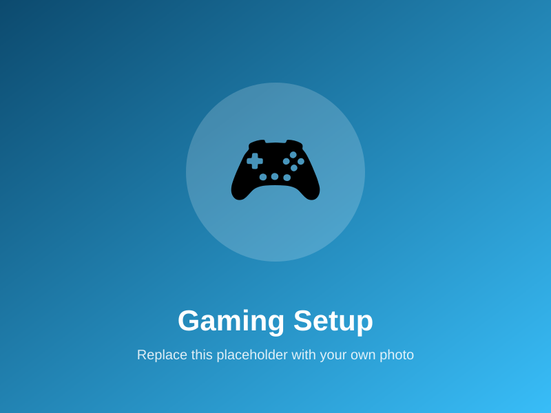
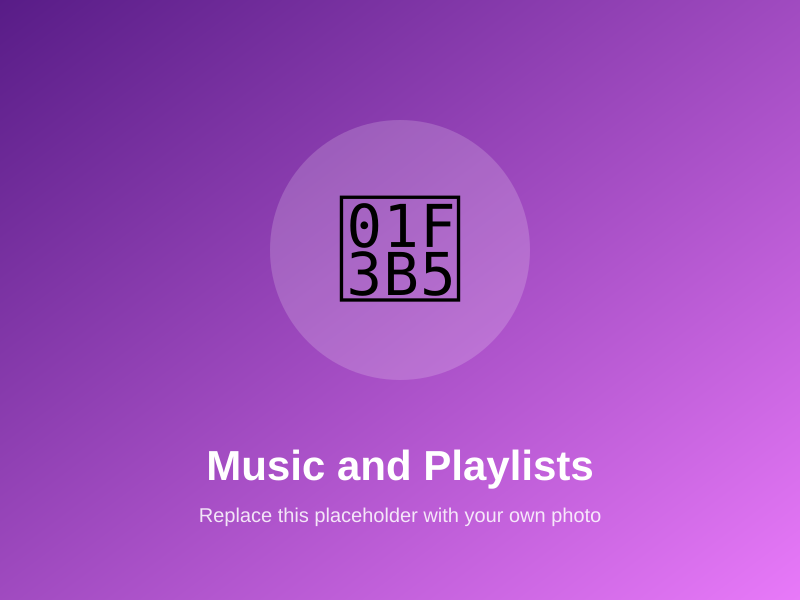
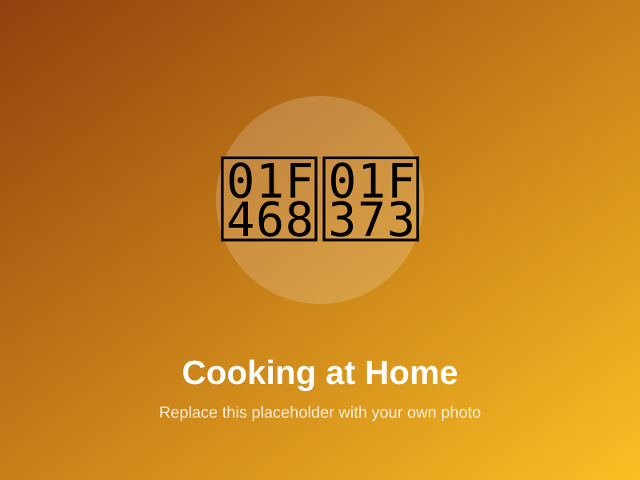

🎮 Gaming
Gaming is how I unwind and stay connected with friends. I love strategy games because they feel like a fun version of the decision-making I'm learning in my business classes.
How I spend my free time when I'm not studying business — the things that keep me curious, creative, and competitive.
I think hobbies say a lot about a person. Mine show that I like to compete, create, and relax — sometimes all in the same weekend. Here are the three that mean the most to me.

Gaming is how I unwind and stay connected with friends. I love strategy games because they feel like a fun version of the decision-making I'm learning in my business classes.

I always have music playing — studying, walking, or just relaxing. I build playlists for everything, and discovering new artists is one of my favorite weekend rituals.

I started cooking to help at home and ended up loving it. Trying a new recipe is my way of experimenting — some dishes work, some don't, and that's the fun of it.
Between classes and studying, hobbies keep me balanced. They give me energy instead of draining it, and they remind me that rest is part of being productive.
Gaming taught me strategy, music taught me discipline, and cooking taught me patience and creativity. I bring those same skills to group projects and my business coursework every week.